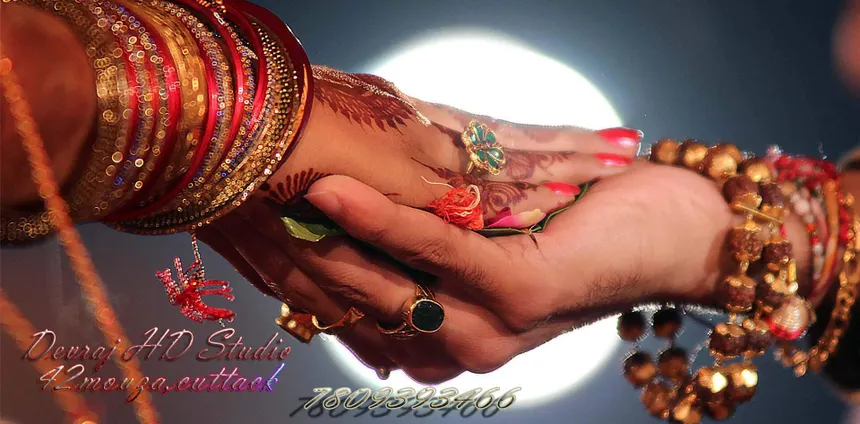

Counting Down To Muhurtham
Auspicious Schedule
Welcoming the groom with traditional Nadaswaram notes, followed by the symbolic Kasi Yatra ritual and family blessings.
The couple sits on the decorated swing (Oonjal) as women sing traditional songs, symbolizing stability, followed by the garland exchange.
The sacred tying of the Thali (Mangalsutra) around the bride's neck amidst the shower of Akshata and blessings of loved ones.
Taking the seven sacred steps around the holy fire, pledging eternal friendship, love, and devotion to one another.
Sumptuous traditional South Indian vegetarian wedding meal served on banana leaf (Kalyana Samayal Elai Saapadu).
Mandapam Location
Madipakkam, Chennai, Tamil Nadu
We request your presence early in the morning to bestow your blessings upon Priya & Vinoth as they begin their sacred journey.
📍 Open Location in Google Maps